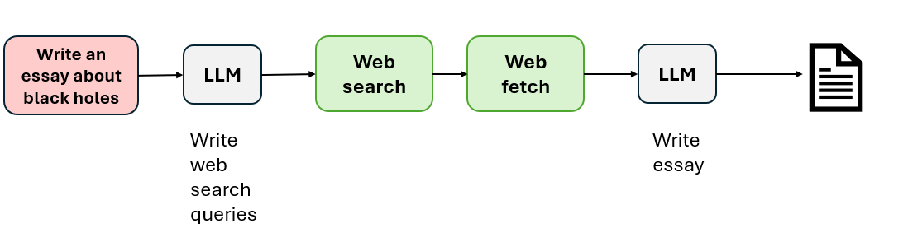
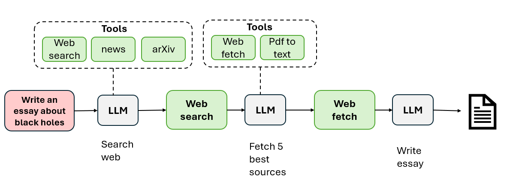

Module 1 — Episode 2
Training:Agentic AI Training
🎯 Learning Objectives
By the end of this episode, you will be able to:
- ✅ Explain the concept of degrees of autonomy in agentic systems
- ✅ Differentiate between less autonomous, semi-autonomous, and highly autonomous agents
- ✅ Identify where to apply each level of autonomy in real-world AI workflows
🧭 Overview
This episode explores how agentic AI systems can vary in their level of autonomy — from strictly programmed workflows to self-directed agents capable of dynamic decision-making.
Understanding these degrees of autonomy helps developers design systems that balance control, flexibility, and safety.
You’ll see how autonomy affects agent behavior, tool usage, and the degree to which an LLM (Large Language Model) determines its own actions.
🧱 Prerequisites
Readers should already understand:
- The concept of agentic workflows (see Episode 1)
- Basic familiarity with LLMs and tool use in AI systems
- Foundational knowledge of prompt-based task execution
🔑 Core Concepts
- Agentic AI – A system that can perform tasks with varying levels of independence, often involving reasoning, planning, and tool use.
- Degree of Autonomy – The extent to which the system decides how to achieve a goal without explicit step-by-step instructions from a human.
- Tool Use – When an agent calls external software (e.g., APIs, code execution, or web search) as part of its reasoning or task completion process.
- Deterministic Workflow – A predefined, linear sequence of steps hard-coded by a human engineer.
- Self-Directed Workflow – A dynamic process where the LLM decides which tools or actions to invoke based on intermediate results.
🖼 Visual Explanation
 Caption:
Caption:
This diagram illustrates the continuum from less autonomous to highly autonomous agents.
- The left side: fully deterministic, human-defined workflows.
- The middle: semi-autonomous systems with limited decision-making.
- The right side: highly autonomous agents capable of self-directed planning, tool creation, and reflection.
⚙️ Technical Breakdown
How It Works
1. Less Autonomous Agents- Follow a fixed, human-defined sequence of steps.
- Example: Writing an essay by executing a predetermined series of web searches and summarizations.
- The LLM’s role is limited to text generation; all tool calls are hard-coded.
 2. Semi-Autonomous Agents- The LLM can choose among predefined tools or paths.
- Example: The LLM decides whether to search the web or query a research database but uses predefined APIs.
 3. Highly Autonomous Agents- The LLM determines both what tools to use and when to use them.
- Can dynamically decide the sequence of actions, generate new functions, or even create new tools.
- Example: The agent decides to fetch PDFs, convert them to text, reflect on results, and iterate to improve its output.

Why It Works
- Flexibility: Allowing the LLM to make decisions enables adaptability to new or ambiguous tasks.
- Efficiency: Autonomous agents can optimize their workflow dynamically.
- Innovation: High autonomy can lead to novel problem-solving approaches not explicitly programmed by humans.
However, autonomy introduces unpredictability — a trade-off between control and capability.
When To Use It
✅ Ideal Scenarios- Less autonomous: Repetitive, well-defined business workflows (e.g., report generation).
- Semi-autonomous: Contextual tasks needing limited decision-making (e.g., customer support bots).
- Highly autonomous: Research or creative tasks where exploration is valuable (e.g., automated scientific literature reviews).
- Tasks require strict compliance, auditability, or deterministic behavior.
- The cost of unpredictable outputs outweighs the benefits of flexibility.
Trade-offs & Limitations
| Aspect | Less Autonomous | Highly Autonomous |
|---|---|---|
| Control | High | Low |
| Flexibility | Low | High |
| Predictability | High | Low |
| Complexity | Low | High |
| Safety | Easier to ensure | Harder to guarantee |
Developers must choose autonomy levels based on task criticality, risk tolerance, and domain constraints.
Performance Considerations
- Computation Cost: Higher autonomy may involve more reasoning steps and tool calls.
- Latency: Dynamic decision-making can increase response time.
- Monitoring: Semi- and highly-autonomous systems require observability to detect undesired behaviors.
- Resource Management: Limit recursive or reflective loops to prevent runaway processes.
💻 Code Examples
Minimal Example — Comparing Autonomy Levels
# Less Autonomous Agent
def write_essay_simple(topic):
search_results = web_search(f"{topic} overview")
content = summarize(search_results)
return generate_text(f"Write an essay on {topic} using: {content}")
# More Autonomous Agent
def write_essay_agentic(topic, llm):
plan = llm.decide_plan(f"How should I research and write an essay on {topic}?")
for step in plan:
if step["action"] == "search":
results = web_search(step["query"])
elif step["action"] == "fetch_pdf":
pdf_text = fetch_and_convert_pdf(step["url"])
elif step["action"] == "reflect":
llm.reflect_on_output()
return llm.compose_final_essay()
🧩 Key Takeaways
- Autonomy in agentic AI exists on a spectrum, not a binary distinction.
- Developers can tune autonomy to match the reliability and flexibility needs of their applications.
- Even less autonomous agents can deliver significant business value today, while highly autonomous systems remain an area of active research.
🚀 Next Steps
In the next episode, we’ll explore the benefits of agentic systems and how they enable capabilities beyond traditional LLM applications.